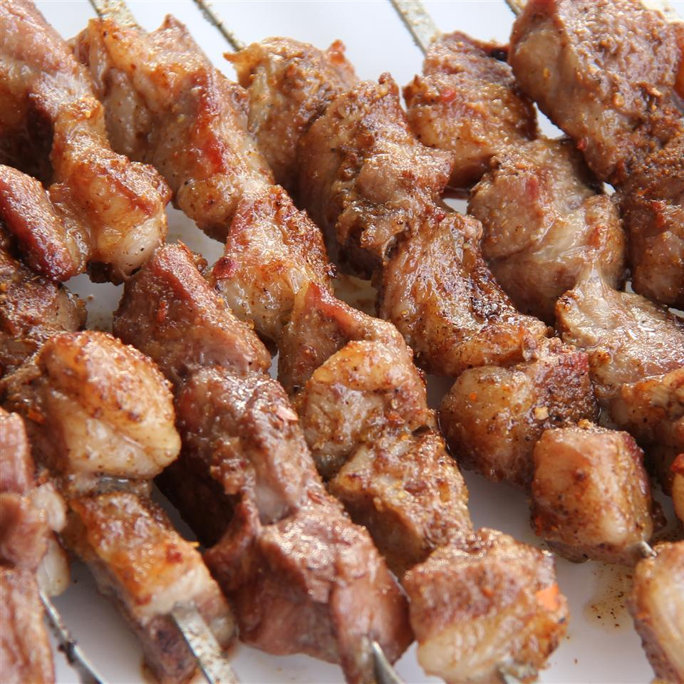

Rey's Infamous Lamb Skewers

Recipe
Ingredients
- 1kg Lamb
- 1 Red onion
- Wooden skewers
- Chilli Flakes
- Cumin
- Salt
Steps
- Dice Lamb into 2cm by 2cm pieces and place into bowl
- Slice and crush Red onion and mix with diced lamb, allowing to marinate for 30 mintues
- Skewer lamb pieces
- Over a blazing hot bbq, cook skewers for 10 mintues, rotating every minute
- Sprinkle 1/1/1 mixure of Chilli flakes, cumin and salt as desired for seasoning
- Enjoy!